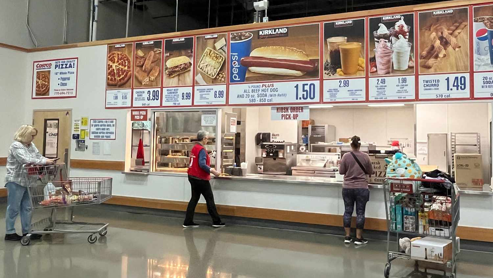
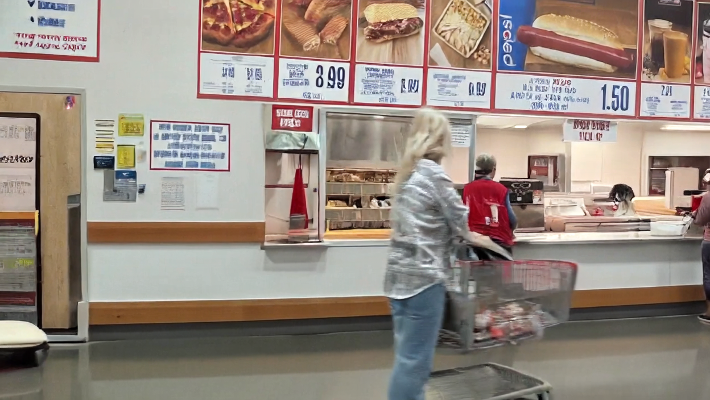

these come from your viewer camera. the green box on the left is what wan would receive as input.
this is a static demo of the UI — generation is disabled. results below were produced by the live pipeline at x=0.15, z=0.1, 4 steps (~12 minutes on an RTX 4090).
